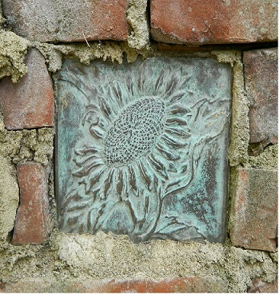
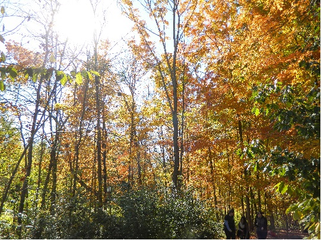

The Photo Locker
About me
This site contains photos taken by Andrew Harbarger. I am a Software Developer with an interest in photography. In my
spare time I like to take time and get out into nature with my wife and my camera. I offer some of my photos to be purchased
as prints to be used on the Photo Store page. In addition, if you are interested in booking a private session, please go
to the Sessions page and fill out the contact information, and I will try to get back with you as soon as possible.

My Philosophy on Photography
I believe in simply capturing the moment of the environment around you. Everyday, we pass by views that are sublime, and
the simplicity is what makes them so beautiful. On a walk, looking at a blooming flower, or noticing a rabbit in a field.
These are times when you can enjoy the harmony, and that is something I wish to capture, that moment on being connected
with your environment. Pictures can make a moment last forever, by allowing us to revisit the imagery.
With taking pictures during events, I prefer shots of showing the happiness of a silly dance being done by the groom with
a niece, or the moment when you can see the love in the eyes of a couple. These moments are also something that are worth
capturing to be able to revisit. So that when it is storming outside, you can remind yourself there is still happiness in
the world.
